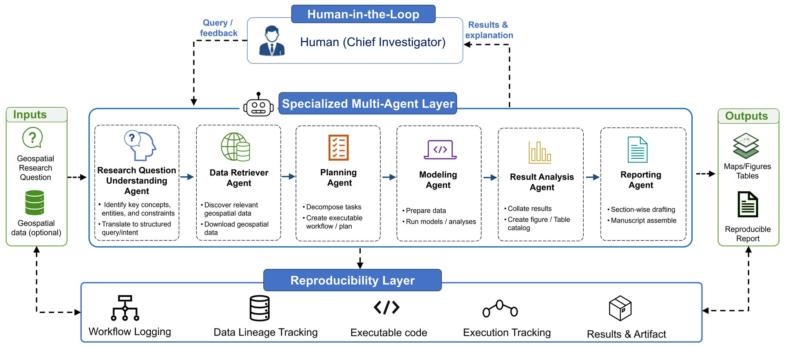

Autonomous Geospatial Scientific Inquiry
GIS Co-Scientist
A human-AI collaborative framework that supports geospatial scientific inquiry, from a research question to a first draft manuscript.
About the project
GIS Co-Scientist takes a research question, plans the analytical steps, executes them, and generates a first draft manuscript. With a human in the loop, it pauses at key stages so you can review, edit, and approve its work before it continues. The same interface also supports standalone data retrieval and spatial analysis.

Get started
Download the desktop app
Choose your operating system to open its installation guide and download the installer. On a Mac, check About This Mac to see whether you have an Apple chip or an Intel processor.
Use your own OpenAI API key to run GIS Co-Scientist. A GIBD key is only a backup for testing or trying out the system.
Research case studies
Examine the research questions, conversation records, workflows, figures, and manuscripts from three full-pipeline runs.
Spatial Inequalities in Air Pollution Exposure and Income Inequality in California
Research question: How do spatial inequalities in PM2.5 exposure across California counties vary with income inequality (Gini) in 2019, and does the spatial relationship vary by urban–rural classification?
View case studyMobility-Mediated Health
Research question: How do spatial patterns of mobility (place visitation) mediate the relationship between neighborhood social economic status and depression prevalence across the counties of South Carolina?
View case studyProximity-Based Spatial Modeling of Hazardous Waste Exposure and Asthma Prevalence in North Carolina
Research question: How does proximity to hazardous waste facilities influence spatial patterns of asthma prevalence across census tracts of North Carolina, and how do these relationships vary spatially by socioeconomic and demographic context?
View case studyPartially failed run
Ablation runs
The same three research questions, run without the Planning Agent.
Video demonstrations
Introduction

Data Retrieval Mode


Spatial Analysis Mode


Research Mode


Paper and supplemental materials
The case studies, partially failed run, and ablation runs above also support the paper.
Source code
- GIS Co-Scientist Desktop: the desktop app for Windows and macOS.
- GIS Co-Scientist WebUI: the main framework and browser app.
- Data source catalog: shared data source handbooks for the Data Retrieval mode.